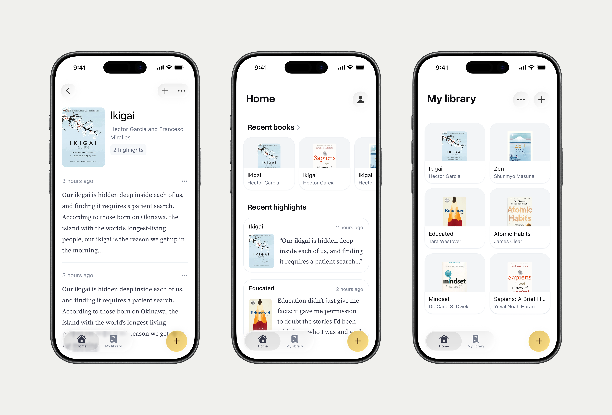
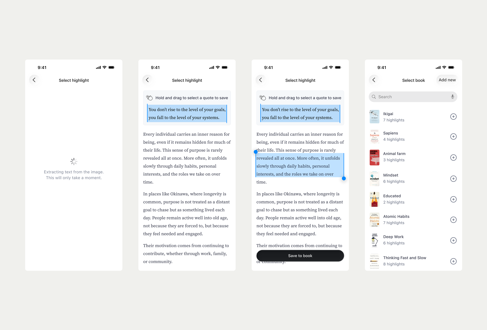
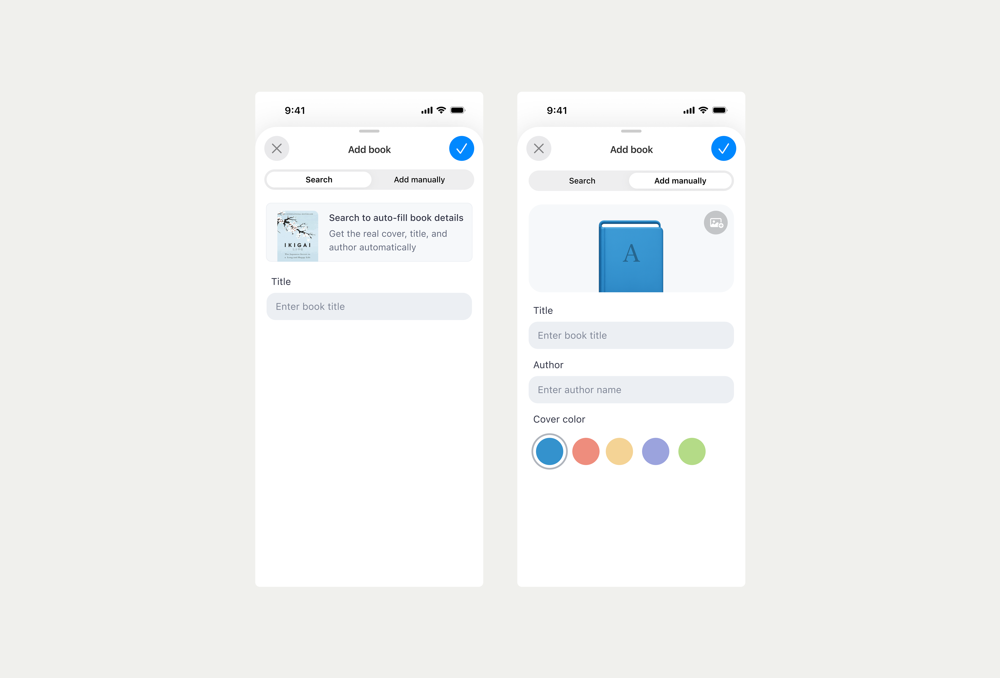
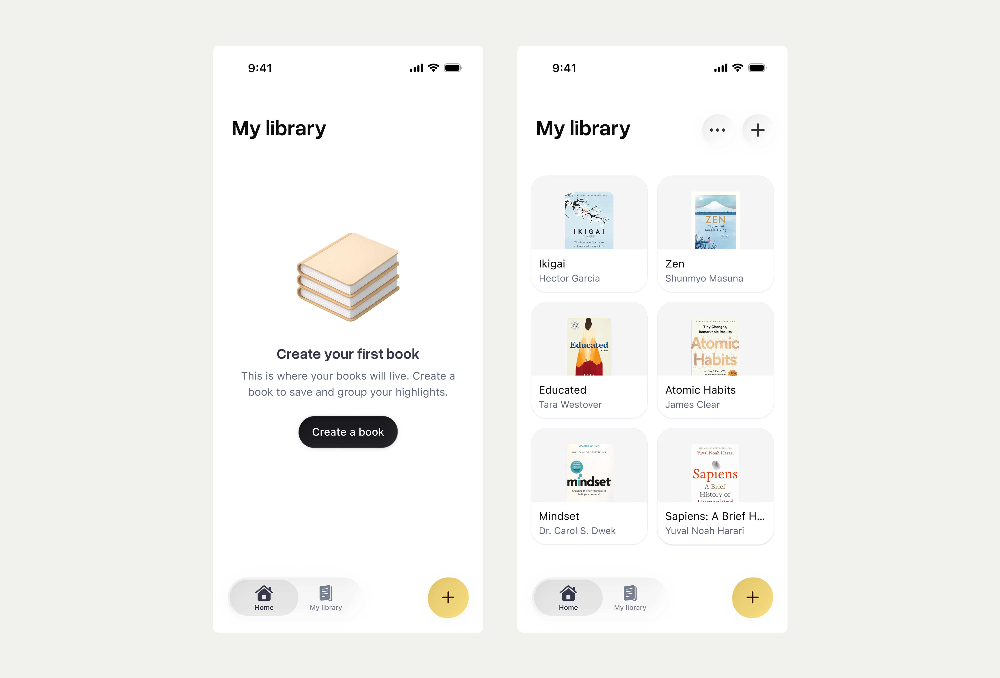
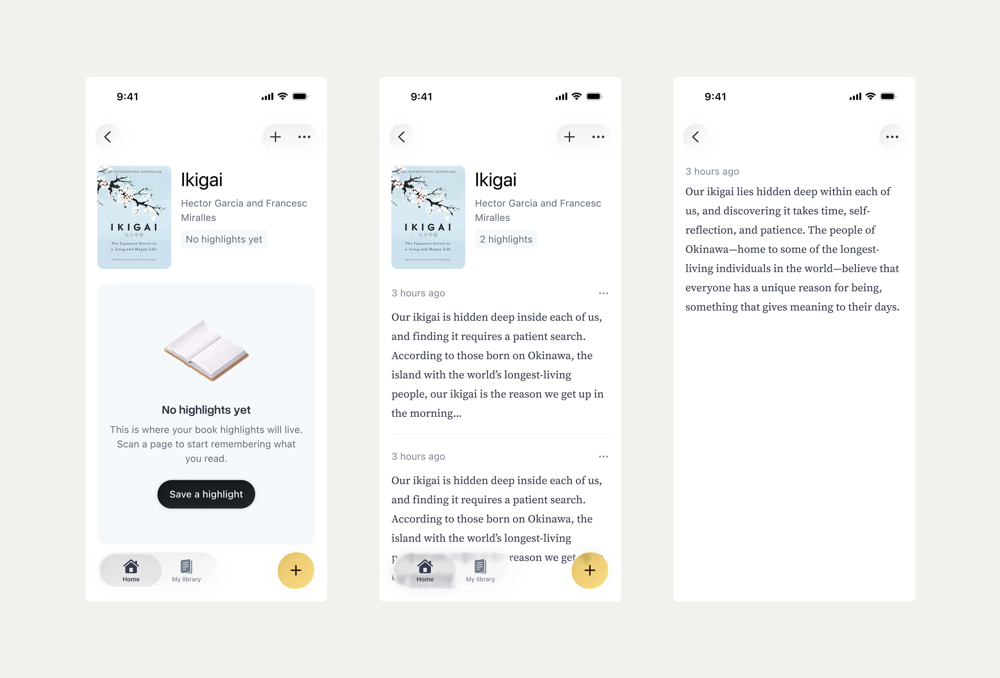
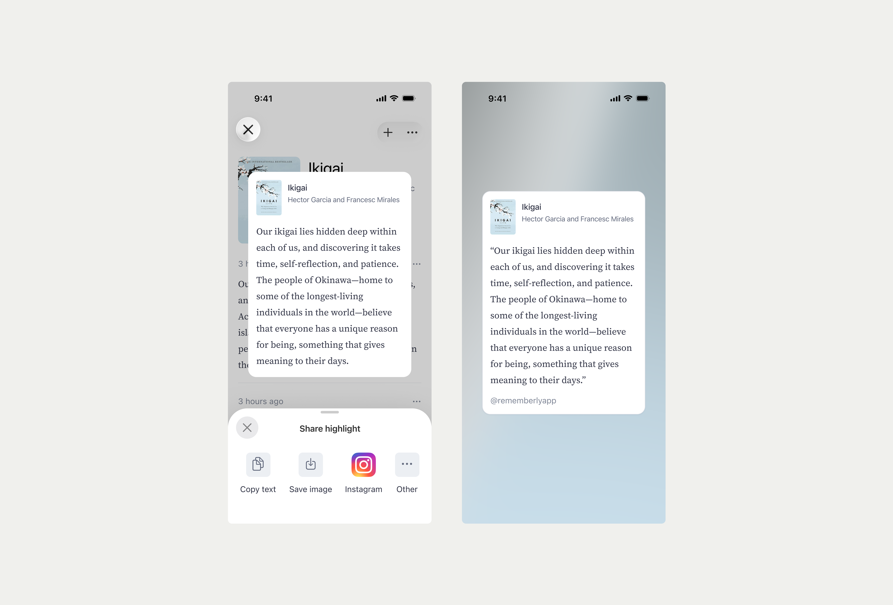

Founding Rememberly: An iPhone app to Save highlights from physical books
Worked on the full cycle from concept to development as I launched my first iPhone app with the help of AI tools like Cursor and Codex.

Background
A problem I had while reading physical books is not being able to save highlights easily. Physically using a highlighter on the books was a no-go for many reasons.
I wanted to solve this for myself and I'm sure there's many who face the same issue. So I'm building Rememberly, basically Kindle highlights but for your physical books.
Role
Building the product from 0 to 1.
Outcome
Design completed and I'm currently building it using XCode, Cursor and Antigravity. I have built a working base userflow for saving a scanned text, managing books, and managing saved quotes. I'm hoping to release a working testflight in the coming weeks.
You can add a quote by taking a photo or uploading a photo of a page. The app uses native OCR to detect the text.
Then you can create a book and neatly organise them in it.


Users can add books in two ways: search for a book through an API or add a custom book. If the user chooses to search for a book, the API will populate the book cover.
I wanted to give custom books some love. Instead of a boring generic thumbnail that will be shared by all books, I gave the ability to customise the book cover with a color theme and engraved the first letter of the title into the cover.
I was able to create the engraving using SwiftUI without having to use multiple assets representing all the outcomes. Just the color variations of the book was uploaded as an asset.

You can manage your saved quotes and library of books neatly in one place.


You can also share a quote externally as a text or image in a message or maybe even to your Instagram story. More options are available in the menu.
